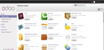

Sistema de Confiabilidad Integral de Activos es un sistema en el cual participe en su realización durante mas de 3 años, el cual esta realizado para la industria petrolera que en su principio estaba desarrollado para un entorno de Escritorio bajo código python, pero en un punto entre los nuevos requerimientos del sistema exigidos por el cliente pide la migración de esta aplicación a un entorno web donde para tal tarea se desarrolla en un framework JavaScript llamado Qooxdoo el cual nos permite hacer interfaces en un entorno web que emulan el comportamiento de ventanas como si fuese un entorno Desktop y utilizando del lado del servidor el lenguaje python y para el acceso a datos el ORM SQLAlchemy.

Es un sistema con la capacidad de manejar variables dinámicas, control de bitácoras, gráficas, y estadísticas de estas variables, haciendo un sistema versátil adaptable al negocio que se quiere implementar, en este desarrollo web colabore en el maquetado de la aplicación con bootstrap. Esta aplicación tiene de lenguajes base html, css, JavaScript y para la lógica del negocio se desarrollo con el framework php Codeigniter, este es un software también desarrollado para PDVSA Industrial.

Este software permitirá la migración del sistema SCADA a un entorno web entre los lenguajes que permiten está adaptación está los lenguajes tales como: JavaScript con NodeJs, python, C++, este es un sistema de alta complejidad y esta en su fase inicial de desarrollo donde se está demostrado que es factible su migración a un entorno web, es el proyecto donde estoy trabajando actualmente.

Es un sistema que
permite el registro de usuarios para así disponer de una data de
personas beneficiadas, dónde están ubicadas y quiénes son usuarios
de gas residencial, comercial, directo y de la empresa
privada.
También permitirá el re ordenamiento de las rutas de
distribución, así como determinar la infraestructura necesaria y
necesidades, con el objetivo de garantizar a los más de 120 mil
usuarios la entrega oportuna y segura.
El registro se hace a
través de tres modalidades: en la web
www.gascomunalenlinea.pdvsa.com, el teléfono 0800-2662662 y el
registro personalizado que se lleva a efecto en la Oficina de
Atención al Usuario de Gas Comunal en Porlamar, municipio Mariño en
esta aplicación realice los casos de uso para el departamento de
análisis y así los desarrolladores pudiesen ejecutar la programación
de tan importante proyecto para el pueblo venezolano.

Sistema de Gestión
Empresarial. Odoo (conocido anteriormente como OpenERP y
anteriormente como TinyERP) es un sistema de ERP integrado de código
abierto actualmente producido por la empresa belga Odoo S.A. El
fabricante declara su producto como una alternativa de código
abierto a SAP ERP y Microsoft Dynamics. Colabore en el piloto para
probar y desarrollar módulos de este ERP.